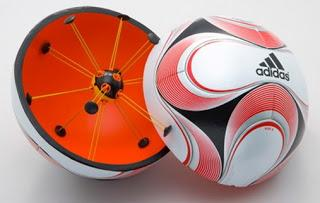

Invenzioni
che cosa sono la smartball?

La Smart Ball dell’Adidas consente di migliorare la propria tecnica, la potenza e la precisione dei tiri grazie ai dati statistici registrati in tempo reale dai sensori del pallone. La Smart Ball, infatti, somiglia a un pallone da calcio ma all’interno contiene dei sensori che tracciano ogni movimento e trasmettono tutte le informazioni acquisite a un’app da installare sul proprio smartphone.
I dati relativi alla velocità, la distanza e la rotazione sono essenziali per un giocatore che con questo innovativo prodotto dell’Adidas potrà tenere sott’occhio le proprie performance, condividere i risultati con i compagni di squadra o sfruttarli per dare il massimo in campo. La Smart Ball sta generando interesse anche negli allenatori, che con questo strumento potranno analizzare le caratteristiche di tutti i giocatori della propria squadra e scoprire gli eventuali punti deboli.